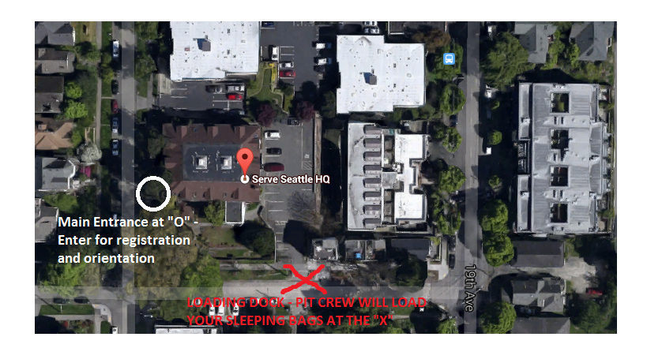

Overview
1.0 Purpose
The purpose of Sleepless in Seattle's Big Give is to provide every homeless person in Seattle & King County with a warm sleeping bag and a sense of dignity.
We will be sending out 50 teams of 4-5 volunteers to predesignated zones all around King County to meet those in need and offer not only a sleeping bag but also genuine friendship that seeks to listen, empathize, and care for the people in our community.
2.0 Team Introductions
If you have already signed up, you should have received an email with your group information by now. Please contact sleeplessinseattlegiving@gmail.com with any questions. If you would still like to sign up as an alternate, please use the links below:
Big Give Volunteer Signup Form
Big Give Volunteer Leaders Signup Form
After picking up sleeping bags and attending orientation at Serve Seattle (more on this below), your team will head to your designated zone to find, serve, and befriend the homeless in that area. Please see the Sleepless in Seattle Map to locate your zone. We would ask that you prioritize your zone before attempting to serve any other regions.
3.0 Schedule
| 2:00 PM | Loading Cars |
| 3:00 PM | Volunteer Arrival |
| 3:10 PM | Training |
| 3:45 PM | Dismissal |
| 6:00 PM-9:00 PM | Return |
| 9:00 PM | Go Home |
Please familiarize yourself with the complete Big Give Schedule with all key details. The training will cover all major questions relating to street sensitivity, where/how to find the homeless, how to engage with the homeless, and more. We will be starting promptly at 3pm at Serve Seattle - 1808 18th Ave, Seattle, WA 98122. Please make every effort to show up on time.
4.0 Parking
Here are three parking options:
- Street Parking around Serve Seattle - 1808 18th Ave, Seattle, WA 98122
Parking is free around Serve Seattle but can be very difficult to find. - Mt. Zion Baptist Church (.1 mile) - 1634 19th Ave Seattle, WA 98122
Mt. Zion Baptist has offered their ~50-spot back lot for use on Saturday 12/13. - Greek Orthodox Church (.4 mile) - 1804 13th Ave Seattle, WA 98122
The Greek Orthodox Church has offered their 10-spot parking lot for use on Saturday 12/13.
We are seeking to find additional parking options. Nevertheless, we encourage every participant to carpool or bus to Serve Seattle (unless you're the team driver of course)! If you plan on arriving any later than 2:45pm, expect to spend 15 minutes finding parking. Please plan accordingly.
5.0 Team Driver
The responsibility of the driver is to 1) clean and fill up your car before the Big Give 2) load and unload sleeping bags at the loading dock and 3) drive your team around King County to meet those in need.
The loading dock will be open from 2pm-9pm. We encourage drivers to come early before 2:45pm for loading so that their team can depart immediately after the orientation. The volunteer crew at the loading dock will load your car with as many sleeping bags as your car can reasonably fit -- up to about 50 bags. In addition, we will provide you with 36 cupcakes courtesy of PinkaBella cupcakes to be delivered alongside the sleeping bags.
Should your team run out of sleeping bags along the way, you are welcome to return to the loading dock for additional bags. After finishing your portion of the Big Give, please return to the loading dock to unload your sleeping bags. Remaining sleeping bags will be distributed to non-profits specializing in work with the homeless. The loading dock will be on the south side of Serve Seattle as seen in the graphic below:
Serve Seattle - 1808 18th Ave, Seattle, WA 98122
6.0 Big Give Goods
While Sleepless in Seattle will be providing sleeping bags and cupcakes, we would encourage you to consider adding a unique touch to your Big Give with other Christmas goods you could provide. Here are some ideas:
- Care Packages
- Soft Foods - This would include soft protein bars, soft fruits (e.g. bananas, oranges), and PB&J Sandwiches
- Warm Clothes/gloves/hats
Please coordinate amongst yourselves what additional basic goods you would like to provide.
7.0 Liability
The Big Give is an entirely volunteer-initiated event. Any volunteer involvement is purely at the discretion of the volunteer. By attending the event, a volunteer is assuming all of the risks involved with participating in this event.
That said, every volunteer will be put in the safety of a team with other volunteers. At least one person on each team will have had some experience working with or serving the homeless.